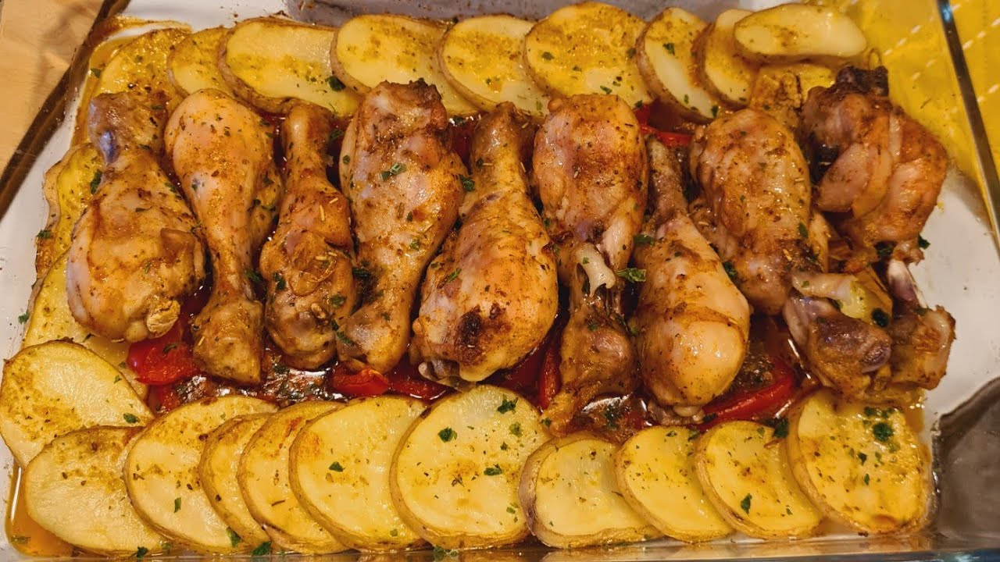

PIZZA MARGHERITA
Historia de la pizza margherita
La Pizza Margherita constituye un emblema de la gastronomía italiana, particularmente de la región de Nápoles, y posee raíces históricas que remiten a finales del siglo XIX. Según la tradición, fue creada en 1889 en honor a la reina Margherita de Saboya, con colores que representan la bandera italiana: el rojo del tomate, el blanco del queso y el verde del orégano. Se caracteriza por una masa fina y esponjosa que se elabora con harina, agua, levadura, aceite y sal, cubierta con salsa de tomate y queso fundido, condimentada con orégano a gusto, y que se cocina al horno hasta obtener un dorado uniforme en los bordes.
Ingredientes (1 pizza)
| Ingrediente | Cantidad |
|---|---|
| Harina | 500 g |
| Agua | 300 ml |
| Levadura | 25 g |
| Aceite | 2 cucharadas |
| Sal | 1 cucharadita |
| Salsa de tomate | 200 ml |
| Queso | 300 g |
| Orégano (opcional) | A gusto |
Paso a paso
- Colocar los 25 g de levadura en un recipiente, agregar un poco de agua tibia y mezclar hasta disolverla completamente.
- Colocar la harina en un bowl grande, agregar la sal y mezclar. Añadir la levadura disuelta, el resto del agua y el aceite.
- Mezclar todos los ingredientes hasta formar una masa y amasar durante 10 minutos, hasta que quede lisa y elástica.
- Formar una bola con la masa, colocarla en un recipiente cubierto con un paño y dejar reposar entre 45 minutos y 1 hora.
- Precalentar el horno a 220°C. Aceitar la pizzera y estirar la masa hasta darle la forma deseada.
- Llevar la masa al horno durante 8 a 10 minutos para que tome consistencia.
- Retirar del horno y distribuir la salsa de tomate sobre la superficie. Agregar el queso de manera uniforme y espolvorear orégano si se desea.
- Hornear a 220°C durante 10 a 15 minutos, hasta que el queso esté derretido y los bordes estén dorados.
- Dejar reposar 2 a 3 minutos, cortar en porciones y servir caliente.

POLLO AL HORNO CON PAPAS
Historia del Pollo al Horno con Papas
El pollo al horno con papas es uno de los platos más populares y arraigados de la cocina casera argentina y de gran parte del mundo occidental. Su origen se remonta a las tradiciones culinarias europeas, donde asar aves junto a vegetales de raíz en un mismo recipiente era una técnica habitual por su sencillez y rendimiento. En Argentina, esta preparación se convirtió en un clásico del almuerzo dominical, presente en hogares de todo el país. Se caracteriza por marinarse con ajo, aceite, pimentón y especias, logrando una piel dorada y crujiente por fuera y una carne jugosa por dentro, acompañada de papas tiernas que absorben todos los jugos de la cocción.
Ingredientes (2 porciones)
| Ingrediente | Cantidad |
|---|---|
| Pollo (patas-muslos o pechugas) | 2 unidades |
| Papas medianas | 4 unidades |
| Ajo | 2 dientes |
| Aceite de oliva | 2 cucharadas |
| Sal | A gusto |
| Pimienta | A gusto |
| Pimentón (opcional) | A gusto |
Paso a paso
- Precalentar el horno a 200°C.
- Mezclar el aceite de oliva, ajo picado, pimentón, sal y pimienta hasta obtener una marinada homogénea.
- Untar el pollo con la mezcla por todos lados, cubriendo bien toda la superficie.
- Pelar y cortar las papas en trozos medianos. Colocarlas en una bandeja para horno y sazonarlas con aceite, sal y pimienta.
- Disponer el pollo sobre las papas en la misma bandeja.
- Hornear durante 60 a 75 minutos, o hasta que el pollo esté dorado y bien cocido, alcanzando una temperatura interna de 75°C.
- A mitad de cocción, bañar el pollo con sus propios jugos para que quede más jugoso.
- Dejar reposar 5 minutos y servir.

SALTEADO DE ARROZ CON VERDURAS Y HUEVO
Historia del Salteado de Arroz con Verduras y Huevo
El arroz salteado con verduras y huevo es una preparación de raíces profundamente asiáticas, especialmente asociada a la cocina china y japonesa, donde el salteado en wok a fuego alto es una técnica milenaria. El plato conocido como "fried rice" se popularizó globalmente como una forma práctica de aprovechar el arroz cocido del día anterior. En la cocina casera argentina adoptó esta técnica combinándola con verduras de estación como zanahoria, cebolla y morrón, convirtiéndose en una opción rápida, nutritiva y económica para el día a día. La salsa de soja, ingrediente opcional, le aporta el toque umami que lo hace inconfundible.
Ingredientes (2 porciones)
| Ingrediente | Cantidad |
|---|---|
| Arroz cocido | 2 tazas |
| Zanahoria | 1 unidad |
| Cebolla | 1 unidad |
| Morrón | 1 unidad |
| Huevos | 2 unidades |
| Aceite | 2 cucharadas |
| Salsa de soja (opcional) | A gusto |
Paso a paso
- Lavar, pelar y cortar la zanahoria, la cebolla y el morrón en cubitos pequeños.
- Calentar el aceite en una sartén grande a fuego medio y agregar las verduras cortadas.
- Saltear las verduras durante 5 a 7 minutos, hasta que estén tiernas.
- Incorporar el arroz cocido y mezclar bien con las verduras hasta integrar.
- Empujar la mezcla hacia un lado de la sartén, dejando un espacio libre en el centro.
- Romper los huevos en el espacio libre y cocinarlos revolviendo hasta que estén listos.
- Mezclar los huevos con el arroz y las verduras hasta integrar todos los ingredientes.
- Agregar salsa de soja a gusto si se desea y cocinar 1 a 2 minutos más para integrar los sabores.
- Retirar del fuego y servir caliente.